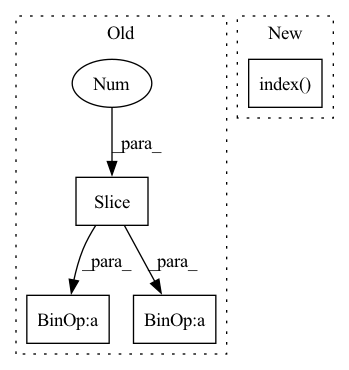

Pattern ID :14240

Before Change
file_name = word_replace(file_name)
if save_name is not None:
import os
dir_name = "../res/pic/" + prefix_dir[2:] + "/"
os.makedirs(dir_name, exist_ok=True)
if lgd is not None:
plt.savefig(dir_name + save_name, bbox_extra_artists=tuple([lgd] + texts), bbox_inches="tight")
else:
plt.savefig(dir_name + save_name, bbox_extra_artists=tuple(texts), bbox_inches="tight")
print("res related location: {}".format("../pic/" + prefix_dir[2:] + save_name))
After Change
misc_scale_index = []
for i in range(len(qualities)):
if i in misc_scale_index:
scale_dict[qualities[i]] = misc_scale[misc_scale_index.index(i)]
else:
scale_dict[qualities[i]] = 1
_, _, lgd, texts = plot_util.plot_results(results, xy_fn= lambda r, y_names: csv_to_xy(r, DEFAULT_X_NAME, y_names,
In pattern: SUPERPATTERN
Frequency: 3
Non-data size: 4
Instances
Fragment ID: 47276560
Project Name: xionghuichen/rlassistant
Commit Name: c960619032588e7490bfcecc6c8aa20a04a0bddf
Time: 2020-12-21
Author: zpcxh95@outlook.com
File Name: RLA/easy_plot/plot_func.py
M Class Name: AnonimousClass
N Class Name: AnonimousClass
M Method Name: plot_res_func(17)
N Method Name: plot_res_func(19)
M Parent Class:
N Parent Class:
M File Name: RLA/easy_plot/plot_func.py
N File Name: RLA/easy_plot/plot_func.py
M Start Line: 91
M End Line: 173
N Start Line: 95
N End Line: 150
'>
Before Change
@pytest.fixture
def dataset_path():
curr_path=("/").join(os.getcwd().split("/")[:-1])
input_path = curr_path+ "/examples/data_test"
output_path = curr_path+ "/tests/"
return input_path,output_path
@pytest.mark.parametrize("modalities",["PT","CT,RTDOSE","CT,PT,RTDOSE","CT,RTSTRUCT,RTDOSE","CT,RTSTRUCT,RTDOSE,PT"])
After Change
@pytest.fixture
def dataset_path():
curr_path=os.getcwd().split("/")
curr_path = ("/").join(curr_path[0:curr_path.index("imgtools")+1])
input_path = os.path.join(curr_path,"examples","data_test")
output_path = os.path.join(curr_path, "tests")
return input_path,output_path
'>
Fragment ID: 47276569
Project Name: bhklab/med-imagetools
Commit Name: a047ef65c17b77282b3cf5df8523f4bcaab14a8e
Time: 2021-12-09
Author: vishweshramanathan@gmail.com
File Name: tests/test_autopipe.py
M Class Name: AnonimousClass
N Class Name: AnonimousClass
M Method Name: dataset_path(0)
N Method Name: dataset_path(0)
M Parent Class:
N Parent Class:
M File Name: tests/test_autopipe.py
N File Name: tests/test_autopipe.py
M Start Line: 17
M End Line: 19
N Start Line: 17
N End Line: 20
'>
Before Change
@pytest.fixture
def dataset_path():
curr_path=("/").join(os.getcwd().split("/")[:-1])
input_path = curr_path+ "/examples/data_test"
output_path = curr_path+ "/tests/"
return input_path,output_path
@pytest.mark.parametrize("modalities",["PT","CT,RTDOSE","CT,PT,RTDOSE","CT,RTSTRUCT,RTDOSE","CT,RTSTRUCT,RTDOSE,PT"])
After Change
@pytest.fixture
def dataset_path():
curr_path=os.getcwd().split("/")
curr_path = ("/").join(curr_path[0:curr_path.index("imgtools")+1])
input_path = os.path.join(curr_path,"examples","data_test")
output_path = os.path.join(curr_path, "tests")
return input_path,output_path
'>
Fragment ID: 47276573
Project Name: bhklab/med-imagetools
Commit Name: 7bb87b6f0eccef842f8aa78552993196fc3758a4
Time: 2021-12-09
Author: vishweshramanathan@gmail.com
File Name: tests/test_autopipe.py
M Class Name: AnonimousClass
N Class Name: AnonimousClass
M Method Name: dataset_path(0)
N Method Name: dataset_path(0)
M Parent Class:
N Parent Class:
M File Name: tests/test_autopipe.py
N File Name: tests/test_autopipe.py
M Start Line: 17
M End Line: 19
N Start Line: 17
N End Line: 20